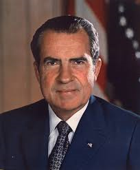
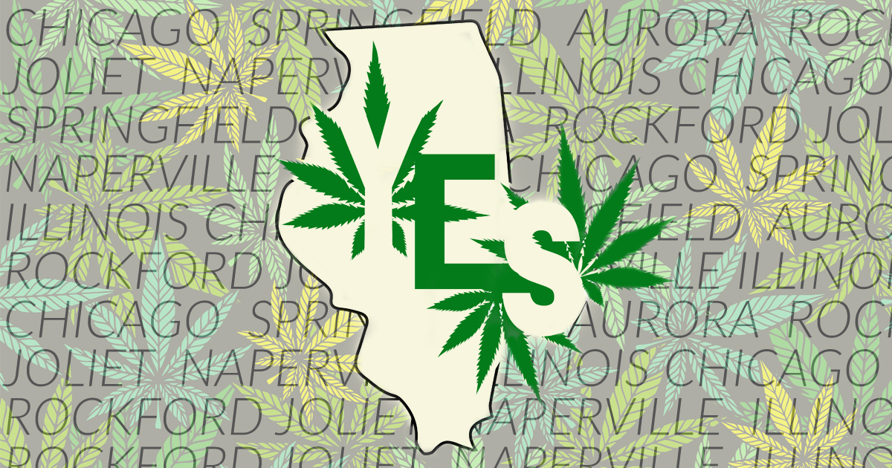

In the Beginning...

Before prohibition, several industries used hemp and marijuana.
Fear Mongering

Racial bias, musical bias, fear and mis-information caused hemp and marijuana to become illegal.
War On Drugs
Even with at least 2 different commisions on marijuana indicating possible medical benefits and that it was not dangerous, President Nixon declared war on drugs and the FDA scheduled marijuana as a class 1 drug (dangerous with no medicinal value).
Progression and Understanding
Advances in the medical use of marijuana, understanding of the hardships the war on drugs has created and progression of views on the topic have enabled several states to decriminalize or legalize.
Still Work to Do

Marijuana is still illegal at the federal level and scheduled as a class 1 drug with no medicinal value. However, the federal government holds several patents on the medical use of marijuana.
Popular Strains
- Purple Haze
- Joe Mama
- Man Eater
- Purple Nurple
- China Cat
- Under a Tree
- Lemon Drop
- Bark
- Ant Eater
- Choke